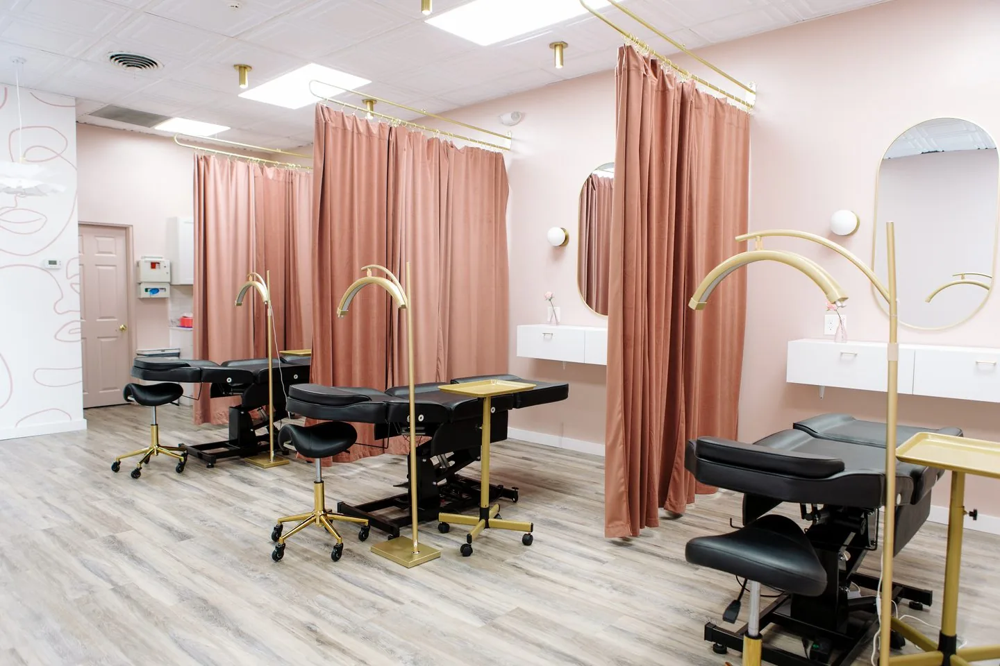
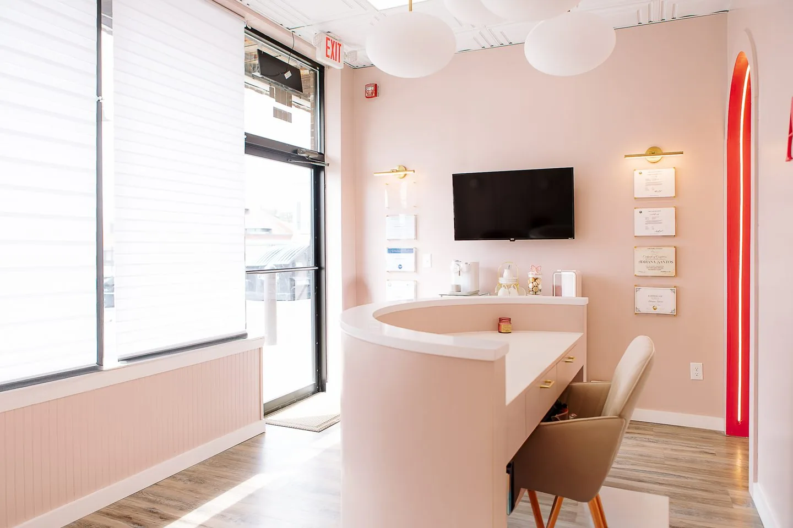

Permanent Makeup in Salem, New Hampshire
Nano Brows, Microblading, Powder Brows, Lip Blush, and permanent eyeliner at 117A Main Street in Salem, NH, a healed result that typically lasts 1 to 3 years, with a perfecting touch-up included 6 to 8 weeks after your first session.
- 20+
- Years
- 5,000+
- Procedures
- 300+
- Students trained
- EN / PT
- Consultation
Permanent makeup in Salem, NH is a cosmetic tattooing service that deposits pigment in the upper layer of skin to fill in eyebrows, define a lip line, or line the eyes, performed at Adriana’s Permanent Makeup’s single Main Street storefront and regulated on two levels at once: a statewide New Hampshire body art license from the state, and a separate Town of Salem license issued under Salem Chapter 433.
Who Is Permanent Makeup in Salem, NH For, and How Does an Appointment Work?
Permanent makeup in Salem, NH suits clients who want low-maintenance brows, a defined lip line, or smudge-proof eyeliner and can commit to a 6- to 8-week healing period before a perfecting touch-up; it is not right for anyone pregnant, under 18, on isotretinoin, or expecting same-day finished color with zero healing time.
Booking runs through four stages: consultation and shape mapping with Adriana Souza Santos, the procedure with topical numbing, healing at home, and the included touch-up once color has settled.
What Should You Verify Before Choosing Any Permanent Makeup Studio Near Salem, NH?
Before booking permanent makeup anywhere near Salem, NH, verify four things regardless of which studio you choose: the practitioner’s license number and issuing authority, single-use sterile needles opened in front of you, healed rather than only fresh result photos, and whether the touch-up is included in the quoted price.
| Verify | Why | How, near Salem NH |
|---|---|---|
| License number and issuer | Confirms training and safety. | Verify an OPLC number with the state, not the town. |
| Single-use, sterile needles | Contaminated tools spread infection. | Watch the sealed needle open. |
| Healed result photos | Fresh photos look bolder. | Ask for 6- to 8-week photos. |
| Touch-up included or extra | Changes the real price. | Ask if it's quoted or billed later. |
How Much Does Permanent Makeup Cost in Salem, NH?
Permanent makeup prices at the Salem, NH studio range from $250 for bottom eyeliner to $850 for a brows-and-lips combo, with Nano Brows at $650 and Microblading, Powder Brows, and Lip Blush each at $550; the price mainly moves with technique, treated area, and whether correction of prior work is needed.
| Service | Price |
|---|---|
| Nano Brows | $650 |
| Microblading | $550 |
| Powder Brows | $550 |
| Combination Brows | Custom, at consultation |
| Nano Combo | $600 |
| Lip Blush | $550 |
| Dark Lip Neutralization | $550 |
| Top Eyeliner | $350 |
| Smokey Eyeliner | $400 |
| Bottom Eyeliner | $250 |
| Eyeliner Combo | $500 |
| Brows + Lips Combo | $850 |
| Yearly Touch-Up | From $300 |
The touch-up at 6 to 8 weeks is included above; the yearly touch-up, from $300, is separate. Split any service with Cherry. see options.
What Experience Does the Artist at the Salem, NH Studio Have, and Who Wrote This Page?
Adriana Souza Santos, the Master Permanent Makeup Artist behind the Salem, NH studio and the author of this page, has performed more than 5,000 procedures and trained more than 300 students over a 20-plus year career, holds an AAM Diamond Certified Trainer credential, and consults in both English and Portuguese.
- 20+
- Years
- 5,000+
- Procedures
- 300+
- Students trained
- AAM
- Diamond Trainer
Which Licenses Does the Salem, NH Studio Hold?
Adriana Souza Santos holds New Hampshire state Body Artist license number 4283, valid through 18 July 2028, which anyone can verify at the state’s public lookup. The Town of Salem separately licenses the artist as a Permanent Make-Up Artist under BODA-10 and the establishment under BODE-4.
| License | Classification | Number | Issued by | Valid through |
|---|---|---|---|---|
| Body Artist (state) | Body Artist | 4283 | NH Office of Professional Licensure and Certification, Board of Body Art | 18 Jul 2028 |
| Body Artist (town) | Permanent Make-Up Artist | BODA-10 | Town of Salem Health Division | 28 Feb 2027 |
| Body Art Establishment (town) | Tattoo Establishment | BODE-4 | Town of Salem Health Division | 28 Feb 2027 |
You can check the state license yourself. New Hampshire publishes a licence lookup at forms.nh.gov/licenseverification. Search the name Adriana Souza Santos, or the number 4283, and the state will confirm the status independently of this website.
The town classification is worth noticing. Salem issued BODA-10 specifically as a Permanent Make-Up Artist license, not as a general tattoo license, under Salem Chapter 433, the town’s Tattoo, Body Piercing, Branding and Permanent Make-up Regulations.
What Does the Salem, NH Studio Actually Look Like?
The Salem studio at 117A Main Street is a purpose-built space on New Hampshire Route 97, with several curtained treatment stations rather than a single room. Each station has its own adjustable procedure bed, arc lamp and mirror, and curtains close for privacy during the appointment.




The multi-station layout is the practical difference between the two studios. Salem can run more than one appointment at a time, which is why a Salem client often finds availability on a date the Wilmington suite is already booked.
The studio sits on Main Street in the Salem Depot area, about 1.5 miles from I-93 Exit 2. Clients from Methuen, 4.5 miles away, and from Windham, 5.3 miles away, reach it without crossing back into Massachusetts.
Why Does Choosing the Salem, NH Studio Change Which Rules Apply?
Choosing a Salem, NH studio instead of a Massachusetts one changes which authority regulates the practitioner: New Hampshire licenses body art practitioners at the state level under RSA 314-A, while Massachusetts leaves body art regulation to each town’s own Board of Health, so a Salem client can verify a license directly with the state instead of a town hall.
In New Hampshire, body art is regulated at the state level, with two narrow exceptions: the law does not apply to a person licensed by the New Hampshire Board of Medicine or the Office of Professional Licensure and Certification acting within the scope of certain other professional licenses, or to a person or facility that performs only ear-lobe piercing (RSA 314-A:4). Outside those exceptions, any body art practitioner in New Hampshire must be licensed directly by the state’s Office of Professional Licensure and Certification under RSA 314-A, regardless of which town they work in.
Under the rules currently in force, that license requires either a supervised apprenticeship, a minimum of 1,500 hours of training per year, over 12 to 24 months, for the first specialty, or at least three years of supervised practice in an establishment, compliant with the applicable statutes and rules. Under either path, the applicant must separately complete a course in the proper sterilization of instruments and materials (RSA 314-A:2, III); it is an additional condition, not an either/or. Eyebrow microblading performed specifically by a licensed cosmetologist or esthetician follows a separate, shorter certificate process under RSA 314-A:2, IV.
Massachusetts has no equivalent single state license: Massachusetts General Laws Chapter 111, Section 31 gives each town’s own Board of Health that authority instead, so an OPLC license travels statewide while a Massachusetts town permit stays tied to that one town’s Board of Health.
Salem, NH also sits on NH Route 97, Main Street’s full length; the nearest I-93 access is Exit 2, Pelham Road, per the Town of Salem’s own transportation plan. Salem has no passenger rail station. MBTA Commuter Rail ends at Lowell and Haverhill, MA, unlike the Wilmington, MA studio’s town, served by two commuter rail stations. Salem has 30,964 residents (Census, ACS 2024) in a state with no general sales tax, a statewide fact, not a discount from this studio.
The most common hesitation about booking anywhere is uncertainty over licensing and healing. The perfecting touch-up is already included in every price above, not billed later; call (978) 223-7496 with healing questions, or read the aftercare guide.
Permanent Makeup Services at the Salem, NH Studio
- Nano Brows in Salem, NH, $650
- Microblading in Salem, NH, $550
- Powder Brows in Salem, NH, $550
- Lip Blush in Salem, NH, $550
- Top Eyeliner in Salem, NH, $350
- Brows + Lips Combo in Salem, NH, $850
See the full services menu. This studio (Adriana Beauty Services, Inc.) is open Mon–Sat, 10 a.m.–6 p.m., closed Sunday; training happens separately at Adriana’s Academy in Peabody, MA.
How Far Is the Salem, NH Studio From Nearby Towns?
Adriana’s Permanent Makeup in Salem, NH sits on Main Street, also known as NH Route 97, near the Massachusetts border, drawing clients from Methuen (4.5 mi), Windham (5.3 mi), Pelham (6.8 mi), Haverhill (8.4 mi), North Andover (8.7 mi), and Derry (10.5 mi), each an approximate driving distance from 117A Main Street.
| Town | Driving distance |
|---|---|
| Methuen, MA | 4.5 mi |
| Windham, NH | 5.3 mi |
| Pelham, NH | 6.8 mi |
| Haverhill, MA | 8.4 mi |
| North Andover, MA | 8.7 mi |
| Derry, NH | 10.5 mi |
Frequently Asked Questions About the Salem, NH Studio
Prices at the Salem, NH studio start at $250 for Bottom Eyeliner and reach $850 for a Brows + Lips Combo. Nano Brows is $650; Microblading, Powder Brows, and Lip Blush are each $550. Services can be split into 4 interest-free payments with Cherry, an independent financing provider; approval is not guaranteed.
The studio is at 117A Main Street, Salem, NH 03079, on NH Route 97, the name Main Street carries along its entire length through town. The nearest I-93 access is Exit 2, Pelham Road, per the Town of Salem’s own transportation plan. Call (978) 223-7496 for directions.
No. Salem has no passenger rail station, and MBTA Commuter Rail ends at Lowell and Haverhill, both in Massachusetts; a possible NH extension exists only as a study with no construction schedule. Clients from Methuen or Haverhill drive to the Salem, NH studio instead.
Outside two narrow exceptions in RSA 314-A:4, New Hampshire requires every body art practitioner to hold a license from the state’s Office of Professional Licensure and Certification, not a local permit. Ask for that license number and verify it with the OPLC directly, not with Salem’s town hall.
Yes. Massachusetts General Laws Chapter 111, Section 31 leaves body art regulation to each town’s own Board of Health, so a permit issued in one Massachusetts town does not apply in the next one. A New Hampshire OPLC license, instead, travels with the practitioner across the whole state.
Every service includes the original procedure plus a perfecting touch-up 6 to 8 weeks later, once the skin has fully healed and the true color has settled, at no extra charge. A separate paid yearly touch-up, from $300, follows roughly 12 months after that, once color starts to fade.
Pregnant or breastfeeding clients, anyone under 18, and anyone actively using isotretinoin should not book at all, with no exception. Diabetes, autoimmune disease, and blood-thinning medication need written medical clearance first. See the full aftercare and contraindications guide before scheduling a consultation.
Yes. Any service splits into 4 interest-free payments through Cherry, an independent financial technology company, using a soft credit check that does not affect your credit score. Cherry also offers plans of up to 24 months with interest. Cherry, not this studio, sets approval and final terms.
Adriana Souza Santos, the Master Permanent Makeup Artist who consults at the Salem, NH studio, speaks both English and Portuguese, so clients can describe the result they want in whichever language feels most comfortable, including healing questions after the appointment.
Book online through Fresha for real-time availability at 117A Main Street, or call (978) 223-7496 directly. The studio is open Monday through Saturday, 10:00 a.m. to 6:00 p.m., closed Sunday. First-time clients can also send a question through the contact page first.
Ready to Book Permanent Makeup in Salem, NH?
See real-time availability at 117A Main Street, call (978) 223-7496, or send your question through the contact form first.
Book Online Now Ask a Question First